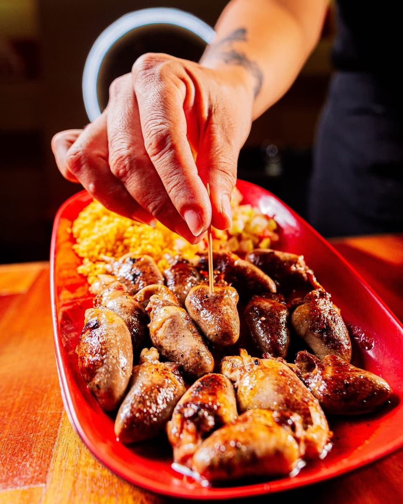
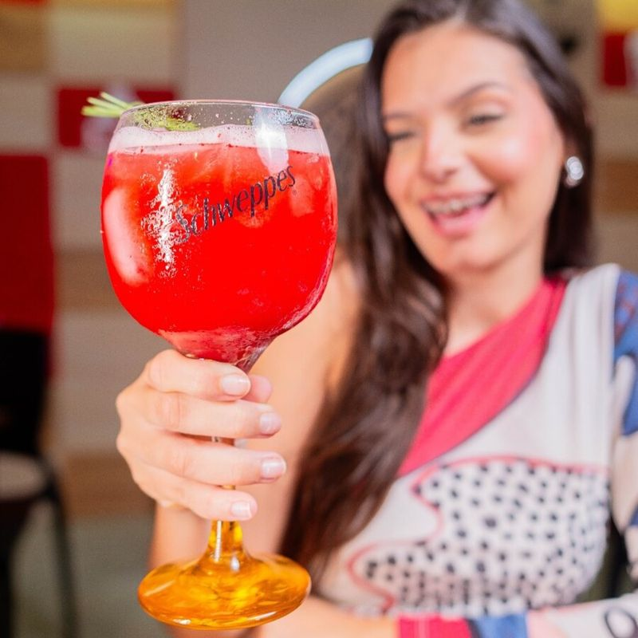
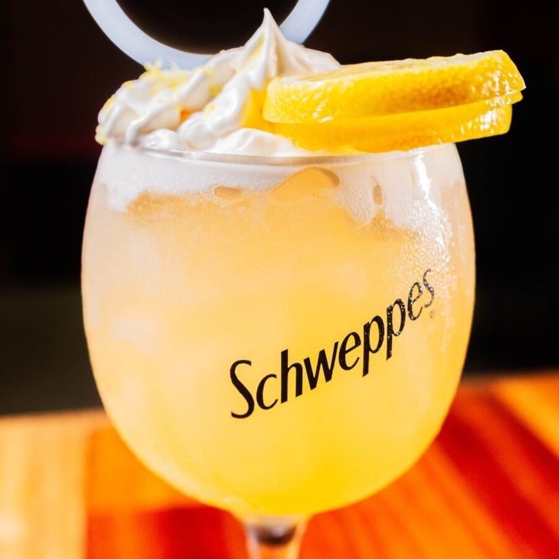
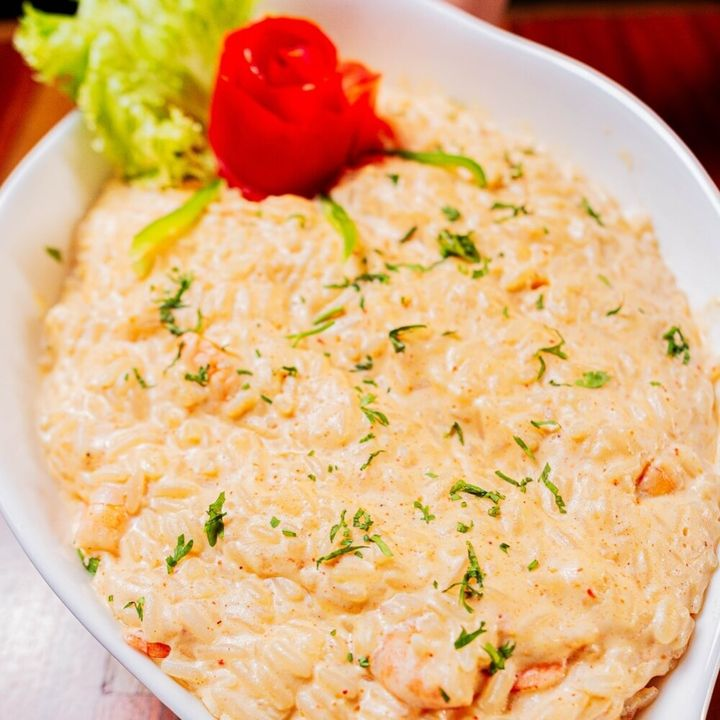

Mais pedido
Mais pedido
Camarão Empanado
Crocante por fora, suculento por dentro, servido com o nosso molho especial da casa.
Seu Antônio Janga
Cardápio da casa
Início / Cardápio completo
Porções fartas, tempero com história e bebidas servidas no ponto exato de refrescância. Filtre por categoria ou busque pelo nome do prato, do drink ou de um ingrediente.
Mais pedido
Crocante por fora, suculento por dentro, servido com o nosso molho especial da casa.
 Na chapa
Na chapa
Na chapa de ferro quente, extremamente macia e envolvida em molho barbecue caramelizado.
 Regional de raiz
Regional de raiz
Receita paraibana de tradição, cheia de queijo coalho dourado, feijão fradinho e carne de sol desfiada.

Clássico de botecoGrelhado na brasa no ponto, temperado na medida e servido com farofa da casa.
 Frutos do mar
Frutos do mar
Camarões inteiros salteados no alho e óleo, com tomate, limão e um toque de cheiro-verde.
 Para a mesa
Para a mesa
Seleção de queijos, salame, muçarela de búfala e azeitonas temperadas para petiscar antes do prato.
 Assinatura
Assinatura
Frutas vermelhas frescas maceradas, hortelã e base cítrica vibrante. O drink que virou identidade do bar.

AutoralGin botânico harmonizado com suco fresco de melancia e gelo cristalino — frescor total à beira-mar.

AutoralO pôr do sol em camadas: notas cítricas de laranja bahia, base aromática e espuma aveludada.
 Forte & seco
Forte & seco
Partes iguais de gin, vermute rosso e Campari, finalizado com casca de laranja torcida na hora.

Especial do chefArroz arbóreo no ponto, fartura de camarões salteados na manteiga e finalização com ervas frescas.
 Para dividir
Para dividir
Picanha fatiada servida na chapa quente, acompanhada de macaxeira, arroz, farofa da casa e vinagrete.
Garanta sua mesa e venha provar tudo isso com música ao vivo no salão.